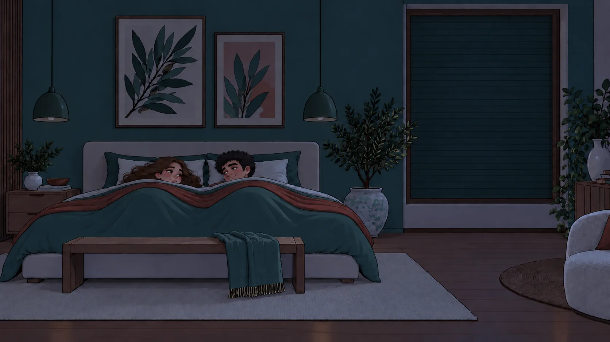
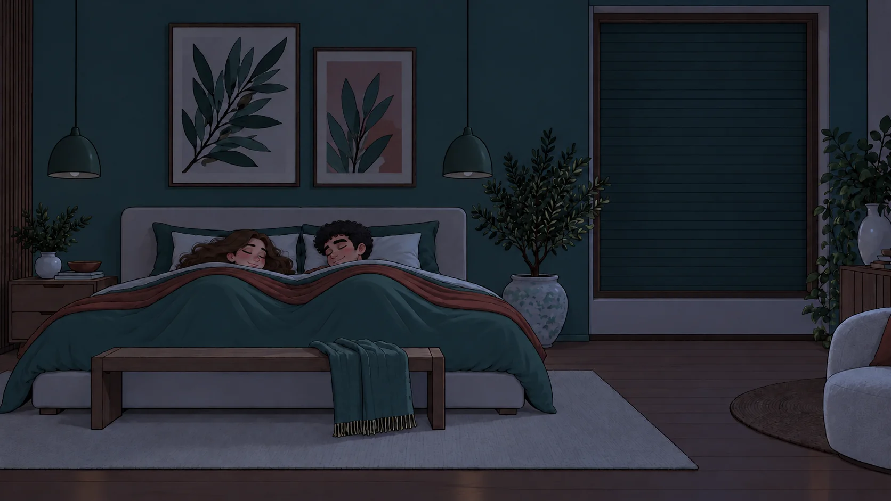
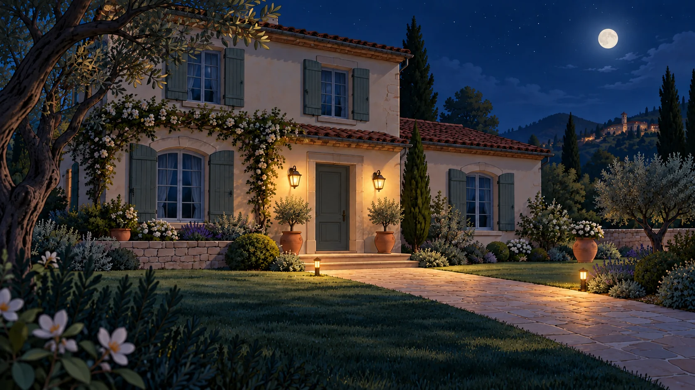
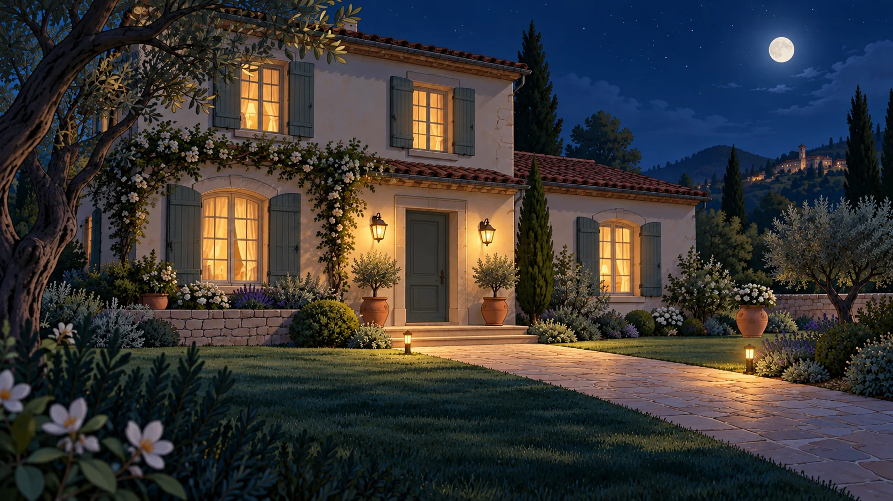

Una giornata smart · Clip 08
Buonanotte, senza pensieri.
La coppia va a dormire. L’inquadratura passa alla villa: i sensori spengono le luci interne nelle stanze vuote.





Buonanotte.La casa riposa con voi.
Una giornata smart23:00La casa segue il vostro ritmo.
LEILei
Una giornata smartAnche la casa va a riposare.
00:0000:15
08 / 08 · Buonanotte